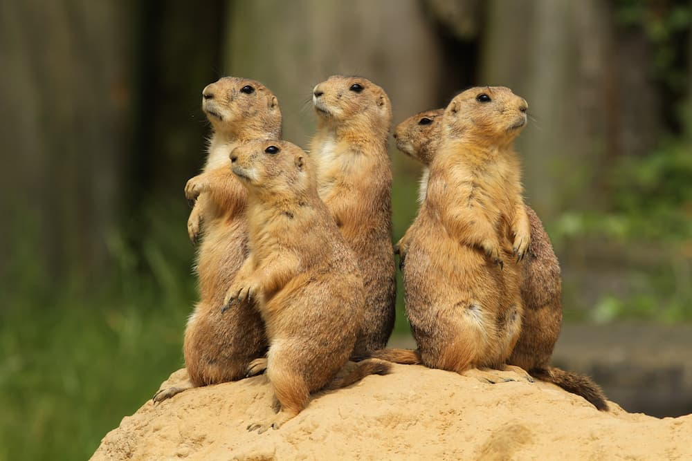
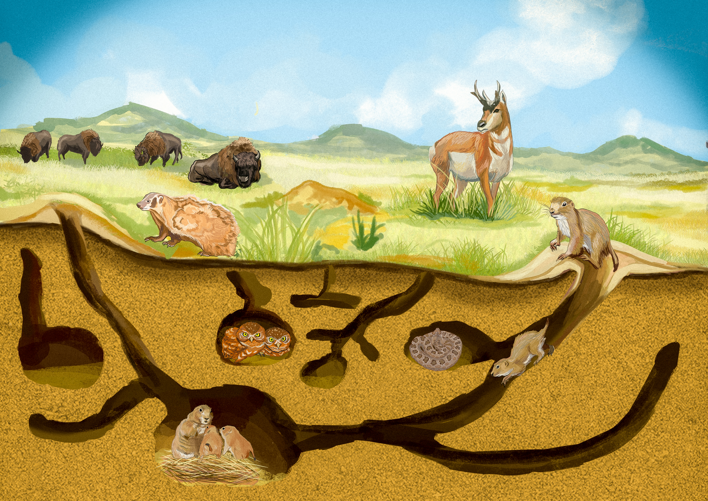
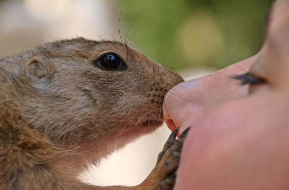
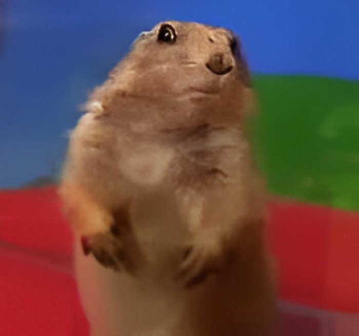

Indice della pagina
Introduzione ai Cani della Prateria

I cani della prateria sono roditori sociali estremamente affascinanti, originari delle vaste distese erbose del Nord America. Nonostante il nome tragga in inganno, non hanno alcuna parentela con i cani: furono battezzati così dai primi esploratori a causa del loro caratteristico richiamo, un verso acuto e secco che ricorda molto il latrato di un piccolo cane. Appartengono in realtà alla famiglia degli Sciuridi, la stessa dei comuni scoiattoli e delle marmotte, con i quali condividono la dentatura robusta e l'abilità nello scavare.
Questi piccoli animali sono celebri per la loro straordinaria organizzazione sociale. Vivono in colonie immense, chiamate vere e proprie "città dei cani della prateria", che possono ospitare migliaia di individui e scendere per diversi metri sotto il terreno. All'interno di queste città, ogni famiglia occupa un territorio specifico chiamato "rione". La loro rete di tunnel non è solo un riparo, ma un capolavoro di ingegneria naturale dotato di zone separate per dormire, stanze per i cuccioli e persino sistemi di ventilazione per far circolare l'aria fresca.
Oltre alle doti di scavo, i cani della prateria possiedono uno dei linguaggi più complessi di tutto il regno animale. Sono in grado di emettere suoni diversi per descrivere non solo il tipo di predatore in arrivo (come un falco o un coyote), ma possono persino comunicarne la taglia, il colore e la velocità. Questa comunicazione costante, unita alla loro postura eretta tipica mentre fanno la "sentinella", li rende uno degli esempi più incredibili di cooperazione e intelligenza selvatica delle pianure americane.
L'importanza dei Cani della Prateria

I cani della prateria sono definiti dai biologi come una "specie chiave", il che significa che la loro presenza è fondamentale per la sopravvivenza di un intero ecosistema. Proprio come la chiave di volta di un arco, se questi roditori venissero rimossi, l’intera struttura della prateria crollerebbe. Si stima che oltre 150 altre specie dipendano, in modo diretto o indiretto, dalle attività quotidiane di questi instancabili scavatori.
Il loro contributo più importante deriva proprio dalla creazione delle loro "città" sotterranee. Scavando chilometri di tunnel, i cani della prateria rimescolano il terreno, portando in superficie nutrienti preziosi e permettendo all'acqua piovana di penetrare in profondità invece di scivolare via. Questo processo di aerazione del suolo rende l'erba circostante molto più nutriente e tenera, attirando grandi erbivori come bisonti e cervi che preferiscono pascolare proprio vicino alle colonie.
Infine, le loro tane abbandonate diventano condomini gratuiti per moltissimi altri animali. Civette delle tane, serpenti, furetti dai piedi neri e volpi utilizzano questi tunnel come rifugio sicuro dai predatori e dal clima estremo. Senza il lavoro di "ingegneria edile" dei cani della prateria, molte di queste specie non avrebbero un posto dove vivere o nidificare, rendendo la prateria un luogo molto più povero e desolato.
Per tornare all'indice cliccare qui.
Cani della Prateria come Animali Domestici

Adottare un cane della prateria non è affatto paragonabile alla gestione di un criceto o di un coniglio; si tratta di un'esperienza molto più simile alla convivenza con un animale selvatico estremamente intelligente e bisognoso di attenzioni. Questi roditori sono creature profondamente sociali e, in cattività, il proprietario diventa a tutti gli effetti il loro "branco". Se lasciati soli per troppe ore, possono sviluppare gravi forme di depressione, ansia o comportamenti distruttivi. Richiedono almeno 3 o 4 ore di interazione diretta ogni giorno: amano le coccole, riconoscono la voce del padrone e cercano costantemente il contatto fisico per sentirsi sicuri.
Dal punto di vista dell'alloggio, la sfida è notevole. Non possono assolutamente vivere chiusi in una gabbia standard per roditori; hanno bisogno di grandi voliere sviluppate in altezza o, idealmente, di una stanza interamente dedicata e messa in sicurezza ("a prova di roditore"). Essendo scavatori nati, cercheranno di rosicchiare mobili, cavi elettrici e persino battiscopa o tappeti. È essenziale fornire loro ampie vasche piene di substrato adatto per scavare e molti tunnel di legno o fieno per soddisfare il loro istinto naturale, evitando che sfoghino la loro energia distruttiva sull'arredamento di casa.
Un altro aspetto cruciale è la gestione del loro temperamento, specialmente durante il periodo del "rut" (la stagione degli amori). In questa fase, che dura alcuni mesi all'anno, anche l'esemplare più dolce può diventare improvvisamente territoriale, aggressivo o lunatico a causa degli sbalzi ormonali. Chi decide di accoglierne uno deve essere pronto a gestire questi cambiamenti e a fornire una dieta rigorosa basata quasi esclusivamente su fieno di ottima qualità e verdure fresche, poiché un'alimentazione errata può causare loro gravi problemi di salute. In sintesi, sono compagni straordinari e affettuosi, ma richiedono una pazienza e uno spazio che pochi altri piccoli animali esigono.
Per tornare all'indice cliccare qui.
L'Identikit del Cane della Prateria

Identikit 🐾
- Nome: Cane della Prateria
- Habitat: Grandi pianure
- Dieta: Erbivoro
- Segno: Scavatore provetto
Passa il mouse per tornare alla foto!
Torna all' indice.
Scheda Riassuntiva
| Caratteristica | Dettaglio |
|---|---|
| Socialità | Altissima - Almeno 3-4 ore di interazione e gioco libero |
| Alimentazione | Erbivori (fieno, erba, radici) |
| Longevità | 8-10 anni in cattività |
| Carattere | Intelligente, esigente, molto affettuoso |
| Spazio Necessario | Stanza dedicata o voliera molto ampia (min. 4mq) |
| Convivenza | Necessaria compagnia di simili o presenza costante umana |
| Odore e Pulizia | Basso (sono animali molto puliti se la lettiera è curata) |
Torna all' indice.